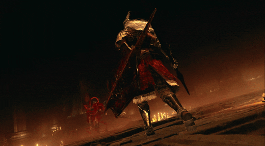

Messmer is the brother of Malenia and Miquella, born with the same fundamental curse as his siblings. While they were afflicted with rot and eternal childhood, Messmer was born with a vile, blasphemous flame and a "Base Serpent" living within him
